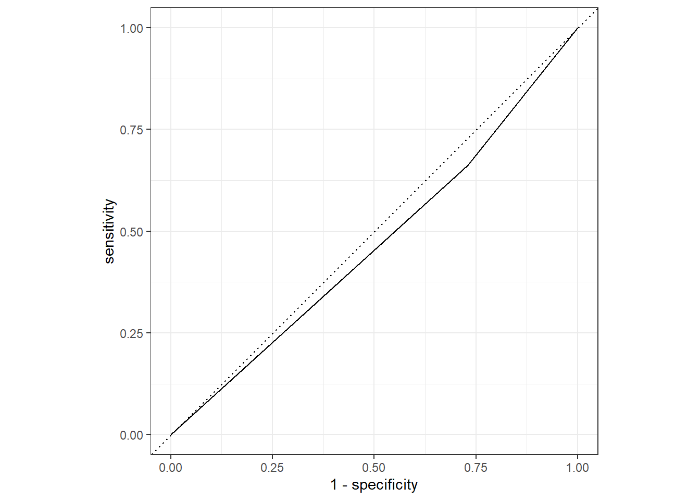
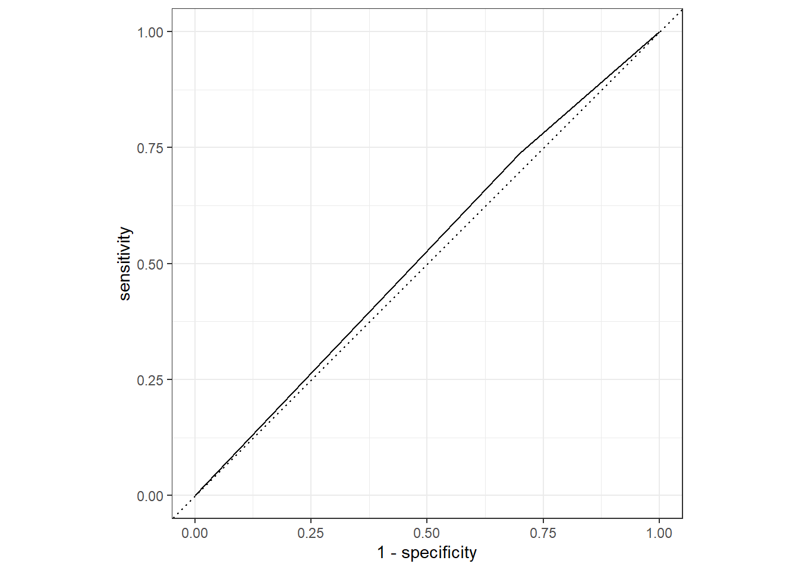

Influenza Project - TidyModels Analysis (Part 2)
Introduction
This exercise focuses on using the TidyModels framework for model evaluation and the influenza data. The main portion conducts model evaluation for the categorical outcome of interest. The appendix, added by fellow group member Joe Martin, adds a similar analysis for the continuous outcome of interest.
The raw data for this exercise comes from the following citation: McKay, Brian et al. (2020), Virulence-mediated infectiousness and activity trade-offs and their impact on transmission potential of patients infected with influenza, Dryad, Dataset, https://doi.org/10.5061/dryad.51c59zw4v.
The processed data was produced on the Data Processing tab.
Within this analysis, the following definitions exist:
- Main predictor of interest = Runny Nose
- Continuous outcome of interest = Body Temperature
- Categorical outcome of interest = Nausea
- Whichever outcome is not currently fitted will be considered a predictor of interest
- All variables are included (even when there are multiple variables for the same symptom)
Required Packages
The following R packages are required for this exercise:
- here: for data loading/saving
- tidyverse: for data management
- tidymodels: for data modeling
- skimr: for variable summaries
Load Processed Data
Load the data created on the Data Processing page.
# path to data
# note the use of the here() package and not absolute paths
data_location <- here::here("data","flu","processeddata.rds")
# load data using the "ReadRDS" function in base R.
mydata <- base::readRDS(data_location)Data Summary
For a more robust exploration, refer to the Exploratory Data Analysis page. However, for reference, we can look at the dataframe summary using the skimr package.
#summary of data using skimr package
skimr::skim(mydata)| Name | mydata |
| Number of rows | 730 |
| Number of columns | 32 |
| _______________________ | |
| Column type frequency: | |
| factor | 31 |
| numeric | 1 |
| ________________________ | |
| Group variables | None |
Variable type: factor
| skim_variable | n_missing | complete_rate | ordered | n_unique | top_counts |
|---|---|---|---|---|---|
| SwollenLymphNodes | 0 | 1 | FALSE | 2 | No: 418, Yes: 312 |
| ChestCongestion | 0 | 1 | FALSE | 2 | Yes: 407, No: 323 |
| ChillsSweats | 0 | 1 | FALSE | 2 | Yes: 600, No: 130 |
| NasalCongestion | 0 | 1 | FALSE | 2 | Yes: 563, No: 167 |
| CoughYN | 0 | 1 | FALSE | 2 | Yes: 655, No: 75 |
| Sneeze | 0 | 1 | FALSE | 2 | Yes: 391, No: 339 |
| Fatigue | 0 | 1 | FALSE | 2 | Yes: 666, No: 64 |
| SubjectiveFever | 0 | 1 | FALSE | 2 | Yes: 500, No: 230 |
| Headache | 0 | 1 | FALSE | 2 | Yes: 615, No: 115 |
| Weakness | 0 | 1 | FALSE | 4 | Mod: 338, Mil: 223, Sev: 120, Non: 49 |
| WeaknessYN | 0 | 1 | FALSE | 2 | Yes: 681, No: 49 |
| CoughIntensity | 0 | 1 | FALSE | 4 | Mod: 357, Sev: 172, Mil: 154, Non: 47 |
| CoughYN2 | 0 | 1 | FALSE | 2 | Yes: 683, No: 47 |
| Myalgia | 0 | 1 | FALSE | 4 | Mod: 325, Mil: 213, Sev: 113, Non: 79 |
| MyalgiaYN | 0 | 1 | FALSE | 2 | Yes: 651, No: 79 |
| RunnyNose | 0 | 1 | FALSE | 2 | Yes: 519, No: 211 |
| AbPain | 0 | 1 | FALSE | 2 | No: 639, Yes: 91 |
| ChestPain | 0 | 1 | FALSE | 2 | No: 497, Yes: 233 |
| Diarrhea | 0 | 1 | FALSE | 2 | No: 631, Yes: 99 |
| EyePn | 0 | 1 | FALSE | 2 | No: 617, Yes: 113 |
| Insomnia | 0 | 1 | FALSE | 2 | Yes: 415, No: 315 |
| ItchyEye | 0 | 1 | FALSE | 2 | No: 551, Yes: 179 |
| Nausea | 0 | 1 | FALSE | 2 | No: 475, Yes: 255 |
| EarPn | 0 | 1 | FALSE | 2 | No: 568, Yes: 162 |
| Hearing | 0 | 1 | FALSE | 2 | No: 700, Yes: 30 |
| Pharyngitis | 0 | 1 | FALSE | 2 | Yes: 611, No: 119 |
| Breathless | 0 | 1 | FALSE | 2 | No: 436, Yes: 294 |
| ToothPn | 0 | 1 | FALSE | 2 | No: 565, Yes: 165 |
| Vision | 0 | 1 | FALSE | 2 | No: 711, Yes: 19 |
| Vomit | 0 | 1 | FALSE | 2 | No: 652, Yes: 78 |
| Wheeze | 0 | 1 | FALSE | 2 | No: 510, Yes: 220 |
Variable type: numeric
| skim_variable | n_missing | complete_rate | mean | sd | p0 | p25 | p50 | p75 | p100 | hist |
|---|---|---|---|---|---|---|---|---|---|---|
| BodyTemp | 0 | 1 | 98.94 | 1.2 | 97.2 | 98.2 | 98.5 | 99.3 | 103.1 | <U+2587><U+2587><U+2582><U+2581><U+2581> |
Data Splitting
Task: Write a code that takes the data and splits it randomly into a train and test datasets.The code for this section comes from the “Data Splitting” portion of the Tidyverse Tutorial.
#fix the random numbers by setting the seed
#this enables the analysis to be reproducible when random numbers are used
set.seed(222)
#put 3/4 of data into the training set
data_split <- rsample::initial_split(mydata, prop = 3/4)
#create dataframes for the two sets:
train_data <- rsample::training(data_split)
test_data <- rsample::testing(data_split)Logistic Regression for Categorical Outcome: Nausea
For the categorical outcome of interest (nausea) we can do the following:
- Create a logistic regression workflow
- Fit the model to all predictors
- Fit the model to our primary predictor (runny nose)
- Compare the models
Workflow creation and model fitting
Task: Create a simple recipe that fits categorical outcome of interest (Nausea) to all predictors. The code for this section comes from the “Create Recipes” portion of the Tidyverse Tutorial. Ignore the concept of roles and features discussed in the tutorial.
#initiate a new recipe using 'recipe' function
nausea_rec <- recipes::recipe(Nausea ~., data = train_data)
#build a model specfiication using 'parsnip' package
lr_mod <- parsnip::logistic_reg() %>%
parsnip::set_engine("glm")
#use 'workflows' package to create a simple workflow that fits a logistic model to all predictors using glm function
nausea_wflow <- workflows::workflow() %>%
workflows::add_model(lr_mod) %>%
workflows::add_recipe(nausea_rec)
nausea_wflow## == Workflow ====================================================================
## Preprocessor: Recipe
## Model: logistic_reg()
##
## -- Preprocessor ----------------------------------------------------------------
## 0 Recipe Steps
##
## -- Model -----------------------------------------------------------------------
## Logistic Regression Model Specification (classification)
##
## Computational engine: glm#0 recipe steps?
#use function to prepare the recipe and train the model from the resulting predictors
nausea_fit <- nausea_wflow %>%
parsnip::fit(data = train_data)
#create tibble for model fit using broom and extract
nausea_fit %>%
workflowsets::extract_fit_parsnip() %>%
broom::tidy()## # A tibble: 38 x 5
## term estimate std.error statistic p.value
## <chr> <dbl> <dbl> <dbl> <dbl>
## 1 (Intercept) 1.63 9.40 0.173 0.862
## 2 SwollenLymphNodesYes -0.241 0.232 -1.04 0.298
## 3 ChestCongestionYes 0.219 0.257 0.853 0.394
## 4 ChillsSweatsYes 0.115 0.332 0.346 0.729
## 5 NasalCongestionYes 0.560 0.311 1.80 0.0713
## 6 CoughYNYes -0.705 0.611 -1.15 0.249
## 7 SneezeYes 0.117 0.248 0.473 0.636
## 8 FatigueYes 0.177 0.438 0.403 0.687
## 9 SubjectiveFeverYes 0.229 0.264 0.868 0.385
## 10 HeadacheYes 0.435 0.352 1.24 0.216
## # ... with 28 more rows#create tibble for model fit using broom and extract
#use mutate_if to reduce the number of decimal places
nausea_tibble <- nausea_fit %>%
workflowsets::extract_fit_parsnip() %>%
broom::tidy() %>%
dplyr::mutate_if(is.numeric, round, 3)
nausea_tibble## # A tibble: 38 x 5
## term estimate std.error statistic p.value
## <chr> <dbl> <dbl> <dbl> <dbl>
## 1 (Intercept) 1.63 9.40 0.173 0.862
## 2 SwollenLymphNodesYes -0.241 0.232 -1.04 0.298
## 3 ChestCongestionYes 0.219 0.257 0.853 0.394
## 4 ChillsSweatsYes 0.115 0.332 0.346 0.729
## 5 NasalCongestionYes 0.56 0.311 1.80 0.071
## 6 CoughYNYes -0.705 0.611 -1.15 0.249
## 7 SneezeYes 0.117 0.248 0.473 0.636
## 8 FatigueYes 0.177 0.438 0.403 0.687
## 9 SubjectiveFeverYes 0.229 0.264 0.868 0.385
## 10 HeadacheYes 0.435 0.352 1.24 0.216
## # ... with 28 more rowsModel 1: All Predictors
Task: Examine the predictions, ROC and ROC-AUC for the data. Apply it to both the training and test data. The code for this section comes from the “Use a trained workflow” portion of the Tidyverse Tutorial
#predict the nausea variable using the test data
stats::predict(nausea_fit, test_data)## Warning in predict.lm(object, newdata, se.fit, scale = 1, type = if (type == :
## prediction from a rank-deficient fit may be misleading## # A tibble: 183 x 1
## .pred_class
## <fct>
## 1 No
## 2 No
## 3 No
## 4 No
## 5 No
## 6 Yes
## 7 Yes
## 8 No
## 9 No
## 10 Yes
## # ... with 173 more rows#warning is expected as there are colinear/nested variables contained in the dataset
#predict the probability rather than just the category of variable
nausea_aug_test <- tune::augment(nausea_fit, test_data)## Warning in predict.lm(object, newdata, se.fit, scale = 1, type = if (type == :
## prediction from a rank-deficient fit may be misleading
## Warning in predict.lm(object, newdata, se.fit, scale = 1, type = if (type == :
## prediction from a rank-deficient fit may be misleading#warning is expected as there are colinear/nested variables contained in the dataset
#generate ROC curve for test data
nausea_aug_test %>%
yardstick::roc_curve(truth = Nausea, .pred_Yes, event_level = "second") %>%
workflowsets::autoplot()
#estimate the area under the curve for test data
nausea_aug_test %>%
yardstick::roc_auc(truth = Nausea, .pred_Yes, event_level = "second")## # A tibble: 1 x 3
## .metric .estimator .estimate
## <chr> <chr> <dbl>
## 1 roc_auc binary 0.724#ROC-AUC = 0.724
#Suggests the model may be useful in predicting the Nausea outcome
#predict the nausea variable using the training data
stats::predict(nausea_fit, train_data)## Warning in predict.lm(object, newdata, se.fit, scale = 1, type = if (type == :
## prediction from a rank-deficient fit may be misleading## # A tibble: 547 x 1
## .pred_class
## <fct>
## 1 No
## 2 Yes
## 3 No
## 4 No
## 5 Yes
## 6 No
## 7 No
## 8 No
## 9 No
## 10 No
## # ... with 537 more rows#warning is expected as there are colinear/nested variables contained in the dataset
#predict the probability rather than just the category of variable
nausea_aug_train <- tune::augment(nausea_fit, train_data)## Warning in predict.lm(object, newdata, se.fit, scale = 1, type = if (type == :
## prediction from a rank-deficient fit may be misleading
## Warning in predict.lm(object, newdata, se.fit, scale = 1, type = if (type == :
## prediction from a rank-deficient fit may be misleading#warning is expected as there are colinear/nested variables contained in the dataset
#generate ROC curve for training data
nausea_aug_train %>%
yardstick::roc_curve(truth = Nausea, .pred_Yes, event_level = "second") %>%
workflowsets::autoplot()
#estimate the area under the curve for training data
nausea_aug_train %>%
yardstick::roc_auc(truth = Nausea, .pred_Yes, event_level = "second")## # A tibble: 1 x 3
## .metric .estimator .estimate
## <chr> <chr> <dbl>
## 1 roc_auc binary 0.787#ROC-AUC = 0.787
#Suggests the model may be useful in predicting the Nausea outcome
#slightly better value than ROC-AUC using test data but not extremely differentAlternative model: Runny Nose Only
Task: Re-do the fitting but now with a model that only fits the main predictor (RunnyNose) to the categorical outcome (Nausea).
First, set up a new recipe and create a new workflow function/fit.
#initiate a new recipe using 'recipe' function
nausea_rec_RN <- recipes::recipe(Nausea ~ RunnyNose, data = train_data)
#use the same model specification defined above (lr_mod)
#use 'workflows' package to create a simple workflow that fits a logistic model to all predictors using glm function
nausea_wflow_RN <- workflows::workflow() %>%
workflows::add_model(lr_mod) %>%
workflows::add_recipe(nausea_rec_RN)
nausea_wflow_RN## == Workflow ====================================================================
## Preprocessor: Recipe
## Model: logistic_reg()
##
## -- Preprocessor ----------------------------------------------------------------
## 0 Recipe Steps
##
## -- Model -----------------------------------------------------------------------
## Logistic Regression Model Specification (classification)
##
## Computational engine: glm#0 recipe steps?
#use function to prepare the recipe and train the model from the resulting predictors
nausea_fit_RN <- nausea_wflow_RN %>%
parsnip::fit(data = train_data)
#create tibble for model fit using broom and extract
nausea_fit_RN %>%
workflowsets::extract_fit_parsnip() %>%
broom::tidy()## # A tibble: 2 x 5
## term estimate std.error statistic p.value
## <chr> <dbl> <dbl> <dbl> <dbl>
## 1 (Intercept) -0.790 0.172 -4.59 0.00000447
## 2 RunnyNoseYes 0.188 0.202 0.930 0.352#create tibble for model fit using broom and extract
#use mutate_if to reduce the number of decimal places
nausea_tibble_RN <- nausea_fit_RN %>%
workflowsets::extract_fit_parsnip() %>%
broom::tidy() %>%
dplyr::mutate_if(is.numeric, round, 3)
nausea_tibble_RN## # A tibble: 2 x 5
## term estimate std.error statistic p.value
## <chr> <dbl> <dbl> <dbl> <dbl>
## 1 (Intercept) -0.79 0.172 -4.59 0
## 2 RunnyNoseYes 0.188 0.202 0.93 0.352Logistic Model Comparison
Now examine the predictions, ROC and ROC-AUC for the data. Apply it to both the training and test data.
#predict the nausea variable using the test data
stats::predict(nausea_fit_RN, test_data)## # A tibble: 183 x 1
## .pred_class
## <fct>
## 1 No
## 2 No
## 3 No
## 4 No
## 5 No
## 6 No
## 7 No
## 8 No
## 9 No
## 10 No
## # ... with 173 more rows#warning is expected as there are colinear/nested variables contained in the dataset
#predict the probability rather than just the category of variable
nausea_aug_test_RN <- tune::augment(nausea_fit_RN, test_data)
#warning is expected as there are colinear/nested variables contained in the datasetNow, generate ROC curves and calculate ROC-AUC.
#generate ROC curve for test data
nausea_aug_test_RN %>%
yardstick::roc_curve(truth = Nausea, .pred_Yes, event_level = "second") %>%
workflowsets::autoplot()
#almost a diagonal line
#estimate the area under the curve for test data
nausea_aug_test_RN %>%
yardstick::roc_auc(truth = Nausea, .pred_Yes, event_level = "second")## # A tibble: 1 x 3
## .metric .estimator .estimate
## <chr> <chr> <dbl>
## 1 roc_auc binary 0.466#ROC-AUC = 0.466
#Suggests the model may not be that useful in predicting the Nausea outcome
#predict the nausea variable using the training data
stats::predict(nausea_fit_RN, train_data)## # A tibble: 547 x 1
## .pred_class
## <fct>
## 1 No
## 2 No
## 3 No
## 4 No
## 5 No
## 6 No
## 7 No
## 8 No
## 9 No
## 10 No
## # ... with 537 more rows#warning is expected as there are colinear/nested variables contained in the dataset
#predict the probability rather than just the category of variable
nausea_aug_train_RN <- tune::augment(nausea_fit_RN, train_data)
#warning is expected as there are colinear/nested variables contained in the dataset
#generate ROC curve for training data
nausea_aug_train_RN %>%
yardstick::roc_curve(truth = Nausea, .pred_Yes, event_level = "second") %>%
workflowsets::autoplot()
#almost a diagonal line
#estimate the area under the curve for training data
nausea_aug_train_RN %>%
yardstick::roc_auc(truth = Nausea, .pred_Yes, event_level = "second")## # A tibble: 1 x 3
## .metric .estimator .estimate
## <chr> <chr> <dbl>
## 1 roc_auc binary 0.519#ROC-AUC = 0.519The ROC-AUC values suggest the models may be not be that useful in predicting the Nausea outcome. The ROC-AUC is slightly better value for the training data than for the test data (but not extremely different). There is approximately the same amount of difference for the test/train in model 1.
Appendix A - Continuous Outcome Model (Added by Joe Martin)
For the continuous outcome of interest (body temperature) we can do the following:
- Create a linear regression workflow
- Fit the model to all predictors
- Fit the model to our primary predictor (runny nose)
- Compare the models
Model 1: All Predictors
# I'm continuing to use the same data and code as in Part 1.
# In this part, the outcome variable will be BODY TEMPERATURE and will use a LINEAR MODEL
#initiate a new recipe using 'recipe' function
bt_rec <- recipes::recipe(BodyTemp ~., data = train_data)
#build a model specfiication using 'parsnip' package
lm_mod <- parsnip::linear_reg() %>%
parsnip::set_engine("lm")#use 'workflows' package to create a simple workflow that fits a logistic model to all predictors using glm function
bt_wflow <- workflows::workflow() %>%
workflows::add_model(lm_mod) %>%
workflows::add_recipe(bt_rec)
#0 recipe steps?
#use function to prepare the recipe and train the model from the resulting predictors
bt_fit <- bt_wflow %>%
parsnip::fit(data = train_data)
#create tibble for model fit using broom and extract
bt_fit %>%
workflowsets::extract_fit_parsnip() %>%
broom::tidy()## # A tibble: 38 x 5
## term estimate std.error statistic p.value
## <chr> <dbl> <dbl> <dbl> <dbl>
## 1 (Intercept) 97.7 0.345 284. 0
## 2 SwollenLymphNodesYes -0.191 0.108 -1.77 0.0779
## 3 ChestCongestionYes 0.128 0.116 1.10 0.272
## 4 ChillsSweatsYes 0.196 0.148 1.32 0.188
## 5 NasalCongestionYes -0.163 0.137 -1.19 0.233
## 6 CoughYNYes 0.380 0.289 1.31 0.189
## 7 SneezeYes -0.471 0.114 -4.13 0.0000425
## 8 FatigueYes 0.354 0.187 1.89 0.0592
## 9 SubjectiveFeverYes 0.558 0.119 4.70 0.00000338
## 10 HeadacheYes 0.0838 0.151 0.554 0.580
## # ... with 28 more rows#create tibble for model fit using broom and extract
#use mutate_if to reduce the number of decimal places
#increase number of decimal places to see significant p-values
bt_tibble <- bt_fit %>%
workflowsets::extract_fit_parsnip() %>%
broom::tidy() %>%
dplyr::mutate_if(is.numeric, round, 6)
bt_tibble## # A tibble: 38 x 5
## term estimate std.error statistic p.value
## <chr> <dbl> <dbl> <dbl> <dbl>
## 1 (Intercept) 97.7 0.345 284. 0
## 2 SwollenLymphNodesYes -0.191 0.108 -1.77 0.0779
## 3 ChestCongestionYes 0.128 0.116 1.10 0.272
## 4 ChillsSweatsYes 0.196 0.148 1.32 0.188
## 5 NasalCongestionYes -0.163 0.137 -1.19 0.233
## 6 CoughYNYes 0.380 0.289 1.31 0.189
## 7 SneezeYes -0.471 0.114 -4.13 0.000042
## 8 FatigueYes 0.354 0.187 1.89 0.0592
## 9 SubjectiveFeverYes 0.558 0.119 4.70 0.000003
## 10 HeadacheYes 0.0838 0.151 0.554 0.580
## # ... with 28 more rows## Warning in predict.lm(object = object$fit, newdata = new_data, type =
## "response"): prediction from a rank-deficient fit may be misleading## # A tibble: 183 x 1
## .pred
## <dbl>
## 1 99.3
## 2 99.0
## 3 99.7
## 4 98.7
## 5 99.0
## 6 99.5
## 7 99.3
## 8 98.9
## 9 99.6
## 10 98.8
## # ... with 173 more rows## Warning in predict.lm(object = object$fit, newdata = new_data, type =
## "response"): prediction from a rank-deficient fit may be misleadingTest for error in the model with Root Mean-Squared Error.
#use RMSE to evaluate linear model
bt_error <- bt_aug_test %>%
yardstick::rmse(truth = BodyTemp, .pred)
bt_error$title <- "Error for all variables"Alternative Model: Runny Nose Only
#initiate a new recipe using 'recipe' function
rn_rec <- recipes::recipe(BodyTemp ~ RunnyNose, data = train_data)
#build a model specification using 'parsnip' package
rn_mod <- parsnip::linear_reg() %>%
parsnip::set_engine("lm")
#use 'workflows' package to create a simple workflow that fits a logistic model to all predictors using glm function
rn_wflow <- workflows::workflow() %>%
workflows::add_model(lm_mod) %>%
workflows::add_recipe(rn_rec)
rn_wflow## == Workflow ====================================================================
## Preprocessor: Recipe
## Model: linear_reg()
##
## -- Preprocessor ----------------------------------------------------------------
## 0 Recipe Steps
##
## -- Model -----------------------------------------------------------------------
## Linear Regression Model Specification (regression)
##
## Computational engine: lm#0 recipe steps?
#use function to prepare the recipe and train the model from the resulting predictors
rn_fit <- rn_wflow %>%
parsnip::fit(data = train_data)
#create tibble for model fit using broom and extract
rn_fit %>%
workflowsets::extract_fit_parsnip() %>%
broom::tidy()## # A tibble: 2 x 5
## term estimate std.error statistic p.value
## <chr> <dbl> <dbl> <dbl> <dbl>
## 1 (Intercept) 99.1 0.0964 1028. 0
## 2 RunnyNoseYes -0.261 0.114 -2.29 0.0225#create tibble for model fit using broom and extract
#use mutate_if to reduce the number of decimal places
#increase number of decimal places to see significant p-values
rn_tibble <- rn_fit %>%
workflowsets::extract_fit_parsnip() %>%
broom::tidy() %>%
dplyr::mutate_if(is.numeric, round, 6)
rn_tibble## # A tibble: 2 x 5
## term estimate std.error statistic p.value
## <chr> <dbl> <dbl> <dbl> <dbl>
## 1 (Intercept) 99.1 0.0964 1028. 0
## 2 RunnyNoseYes -0.261 0.114 -2.29 0.0225#predict the nausea variable using the test data
stats::predict(rn_fit, test_data)## # A tibble: 183 x 1
## .pred
## <dbl>
## 1 99.1
## 2 98.9
## 3 98.9
## 4 98.9
## 5 99.1
## 6 99.1
## 7 98.9
## 8 99.1
## 9 99.1
## 10 99.1
## # ... with 173 more rows#warning is expected as there are colinear/nested variables contained in the dataset
#predict the probability rather than just the category of variable
rn_aug_test <- tune::augment(rn_fit, test_data)
#warning is expected as there are colinear/nested variables contained in the datasetLinear Model Comparison
We can compare the models using root mean squared error (RMSE).
#use RMSE to evaluate linear model
rn_error <- rn_aug_test %>%
yardstick::rmse(truth = BodyTemp, .pred)
rn_error$title <- "Error for Runny Nose Model"
error <- bind_rows(bt_error,rn_error)
error## # A tibble: 2 x 4
## .metric .estimator .estimate title
## <chr> <chr> <dbl> <chr>
## 1 rmse standard 1.15 Error for all variables
## 2 rmse standard 1.13 Error for Runny Nose ModelThe RMSE for the Runny Nose model is slightly lower than the RMSE for the model which tests all variables, so we can conclude that it is slightly better at predicting body temperature.